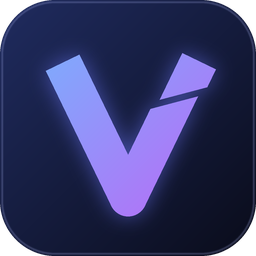

V-edit
トーク・ゲーム実況などの動画編集に特化した、Windows向けの軽量エディタ
GitHub でソースを見る README特徴
Premiere 風の編集画面
タイムライン、J/K/L シャトル、リップルトリム、トラックのロック・表示切り替え、ヒストリー。ショートカットは Premiere に合わせています。
編集は1つの JSON に
カット・テロップ・差し込み・効果音・BGM をすべて project.json に書きます。画面でもコマンドでも、AI に JSON を書かせても同じものを編集できます。
音声処理つき
リップノイズ除去・ゲイン・ノーマライズ（ピーク / ラウドネス）、VST3 プラグイン。無音カットの候補も出せます。
エフェクトとプリセット
出入りの動き・揺れ・グロー・モザイク・トランジション・文字アニメーター・キーフレームと式。よく使う演出は1行のプリセットで書けます。
修正対応
先方に見せた版を控えておき、修正点の時刻をカット後も正しい位置に合わせて一覧できます。
手動保存と写し
保存は Ctrl+S。設定した分ごとに、プロジェクトの写しを自動で残すので、前の状態に戻せます。
仕様
| 対応OS | Windows 10 / 11（64bit） |
| 編集画面 | C++ / Qt 6（試作版は Python + ブラウザ） |
| 再生・書き出し | FFmpeg（NVIDIA の GPU があれば NVDEC / NVENC で高速化） |
| 書き出しエンジン | Rust（vengine） |
| 同梱ツール | 画像編集 vimg、音声編集 vaudio |
| ライセンス | 未設定 |
現在の状態
個人用に作っている開発中のツールです。配布用のzipは未公開で、いまはソースコードのみ公開しています。ビルドには Qt 6・FFmpeg などの開発環境が必要です。